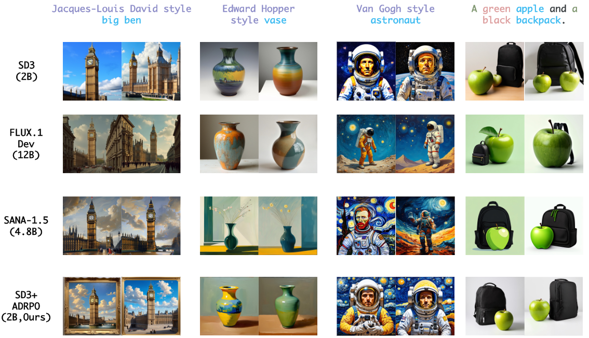
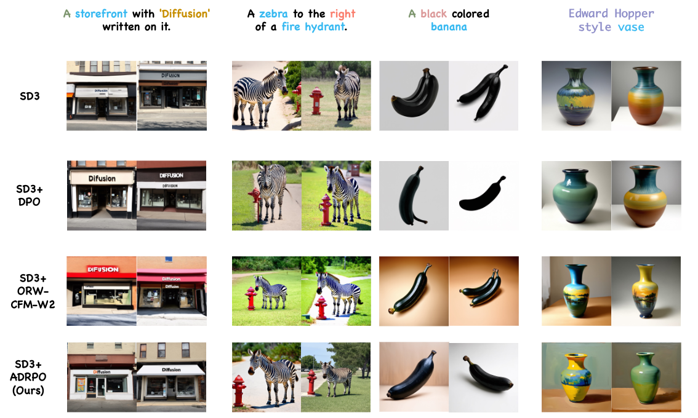
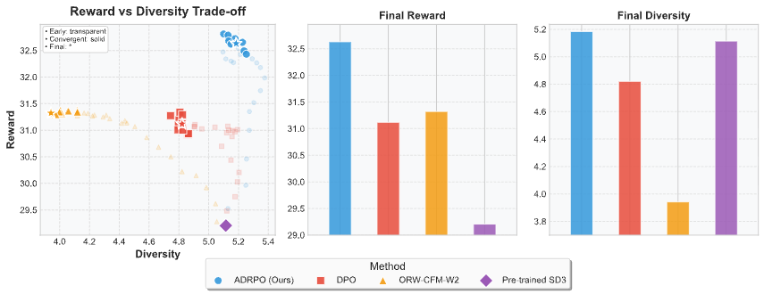
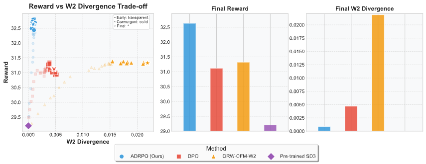
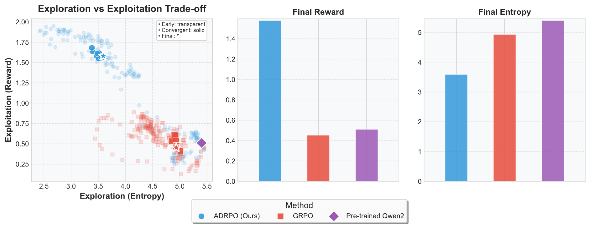
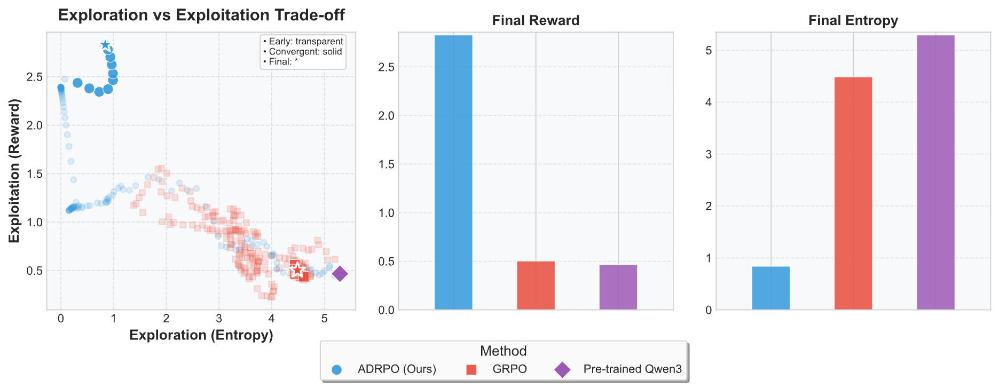

Experiments
Text-to-Image Generation Qualitative Analysis
Comparison with Large FM Generative Models
Our ADRPO fine-tuned SD3 model (2B parameters) significantly
outperforms much larger models like FLUX.1 Dev (12B) and
SANA-1.5 (4.8B). This challenges the conventional wisdom that
parameter scaling is the primary path to performance
improvements. Our method excels in areas where larger models
struggle: for artistic style transfer ("Jacques-Louis David
style big ben"), complex compositions ("Van Gogh style
astronaut"), and attribute binding ("green apple and black
backpack"), ADRPO maintains both style accuracy and
compositional integrity while larger models introduce visual
artifacts despite their 2-6x parameter counts. These results
demonstrate that adaptive regularization can enable smaller
models to match or exceed much larger models' capabilities.

Figure 1: Qualitative Comparison with Large FM Generative Models.
Our ADRPO demonstrates superior performance in
Artistic Style Rendering,
Attribute Binding,
Coloring and
Counting.
Comparison with Other RL Fine-tuning Methods
ADRPO demonstrates clear superiority over existing reinforcement
learning fine-tuning approaches. While DPO preserves diversity
at the cost of semantic alignment and ORW-CFM-W2 improves
alignment but sacrifices diversity, ADRPO achieves excellence in
both dimensions through advantage-guided regularization. This is
evident across text rendering ("Diffusion" storefront),
attribute binding (zebra positioning), coloring (black banana),
and style transfer tasks, where our method consistently delivers
superior compositional accuracy. By dynamically modulating
regularization strength—increasing constraints for uncertain
samples while allowing greater divergence for reliable
ones—ADRPO effectively resolves the exploration-exploitation
dilemma that static approaches cannot address.

Figure 2: Qualitative Comparison with Other RL Fine-tuning Methods.
Our ADRPO demonstrates superior performance in
Artistic Style Rendering,
Text Rendering,
Attribute Binding,
Coloring,
Counting and
Position.
Exploration-Exploitation Trade-off in Policy Optimization
We applied ADRPO to fine-tune Qwen2 (0.5B) and Qwen3 (0.6B)
models using RM-Gemma-2B as the reward model, evaluated on the
RLHFlow/test_generation_2k dataset.


Figure 3: Reward-Diversity/Divergence Trade-off. Left: policy optimization trajectories (using a same seed) of different methods throughout training, with transparency indicating progression from early (transparent) to convergent (solid) to final (star) checkpoints. Each point is a learned policy from different iterations. Center and right: final reward and diversity/divergence across methods.
Reward Hacking Mitigation. The trajectories reveal
distinct vulnerability patterns. While DPO maintains
diversity but plateaus in reward optimization, ORW-CFM-W2
aggressively pursues reward but exhibits significant
diversity collapse, resulting in template-like generations.
ADRPO achieves the highest reward without sacrificing
diversity through advantage-guided regularization, delivering
superior generations with precise attribute binding and high
visual quality.
Exploration-Exploitation Balance. The trajectory
visualization captures each method's navigation of the
landscape. While DPO makes modest improvements before
plateauing and ORW-CFM-W2 follows an exploitation path that
compromises diversity, ADRPO consistently expands the Pareto
frontier. This superior balancing stems from our adaptive
mechanism making sample-specific regularization decisions.
Divergence Control. ADRPO maintains minimal W₂ divergence
while maximizing reward, demonstrating effective control over
policy deviation. This translates to generations that preserve
the base model's capabilities while achieving superior alignment
with reward objectives—a combination neither competing method
attains.
Application to Fine-tuning LLMs
We applied ADRPO to LLM fine-tuning with Qwen2 (0.5B) and Qwen3
(0.6B) models using RM-Gemma-2B as the reward model, evaluated
on RLHFlow/test_generation_2k dataset.


Figure: Exploration-Exploitation Trade-off in Fine-tuning LLMs.
Left: policy optimization trajectories in reward-entropy space for
ADRPO and GRPO across Qwen2 (top) and Qwen3 (bottom) models, with
transparency indicating progression from early to final checkpoints.
Center and right: Final performance of different methods.
Superior Exploration-Exploitation Control. The
trajectories reveal distinct patterns between methods. While
GRPO maintains high entropy but struggles to find high-reward
regions, ADRPO implements strategic exploration that
efficiently navigates the landscape. For Qwen3, ADRPO first
explores lower entropy regions, then actively increases
entropy to escape local optima, before converging to a final
checkpoint with 5× higher reward than GRPO.
Preventing Model Collapse. ADRPO demonstrates
superior resistance to model collapse during extended
training. GRPO's performance tends to plateau or deteriorate,
with later checkpoints often showing lower rewards—a common
failure mode of fixed-regularization methods. ADRPO shows
consistent improvement by dynamically adjusting regularization
based on advantage estimates, eliminating the need for careful
early stopping.
Cross-Architecture Generalizability. The consistent
superior performance across both flow matching models and
different LLM architectures confirms that ADRPO addresses
fundamental limitations in reinforcement learning fine-tuning.
By adapting regularization strength to sample-specific advantage
estimates, our method provides a generalizable solution to the
exploration-exploitation dilemma that effectively transfers
between domains.
Extension to Multi-Modal Audio Reasoning
To validate ADRPO's generalizability beyond text-to-image
generation and text-only LLMs, we fine-tuned Qwen2.5-Omni-7B on
audio reasoning tasks using the AVQA dataset, evaluated on the
MMAU benchmark. This domain requires temporal sequence
understanding and acoustic pattern recognition—capabilities
distinct from text or visual generation.
Multi-modal audio reasoning results on MMAU benchmark
| Method |
Sound (%) |
Music (%) |
Speech (%) |
Total (%) |
| Qwen2.5-Omni (base) |
72.37 |
64.37 |
69.07 |
68.6 |
| GRPO |
77.18 |
70.66 |
74.77 |
74.2 |
| Gemini 2.5 Pro |
75.08 |
68.26 |
71.47 |
71.6 |
| GPT-4o Audio |
64.56 |
56.29 |
66.67 |
62.5 |
| ADRPO (Ours) |
81.98 |
70.06 |
75.98 |
76.0 |
ADRPO achieves 76.0% accuracy, outperforming all
baselines and enabling a 7B model to surpass substantially
larger commercial models including Gemini 2.5 Pro and GPT-4o
Audio through more effective exploration-exploitation balance.
The results demonstrate ADRPO's ability to enable superior
step-by-step reasoning on complex temporal and contextual tasks,
confirming its effectiveness across continuous generation,
discrete sequences, and multi-modal reasoning.
Hyperparameter Robustness. To assess ADRPO's practical
applicability in new domains, we conducted ablation studies on
advantage clipping ranges. All ADRPO configurations substantially
outperform GRPO with stable performance across settings. The
recommended 1xβ₀ achieves the best overall balance, while
performance variations across clipping ranges remain under 0.4%,
confirming robustness.
These results, combined with our text-to-image experiments and LLM
fine-tuning, demonstrate ADRPO's effectiveness across continuous
generation, discrete sequences, and multi-modal reasoning.
Qualitative analysis reveals that ADRPO enables superior
step-by-step reasoning on complex temporal and contextual tasks
compared to GRPO's premature convergence.